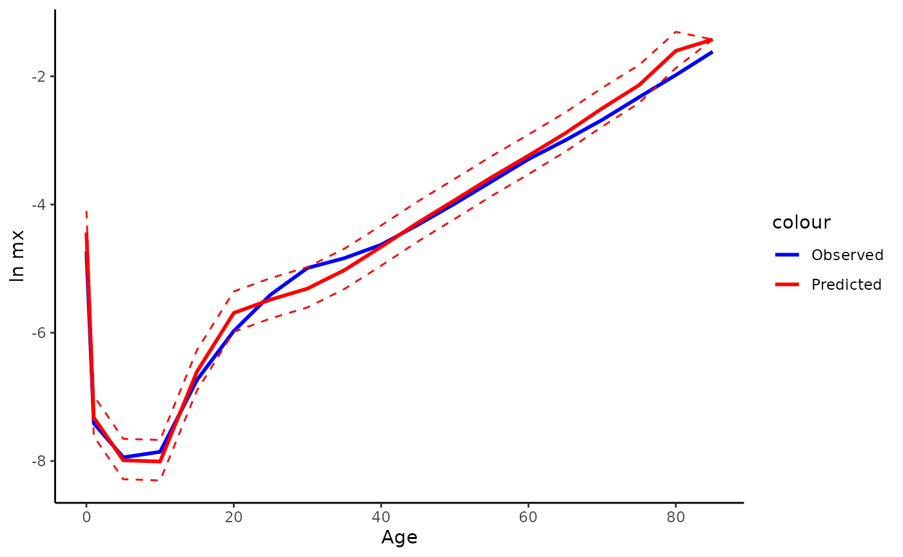
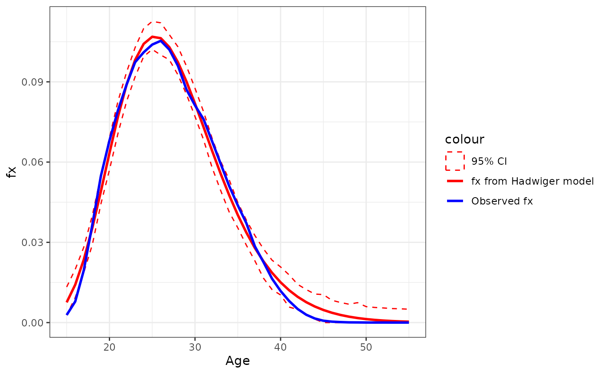
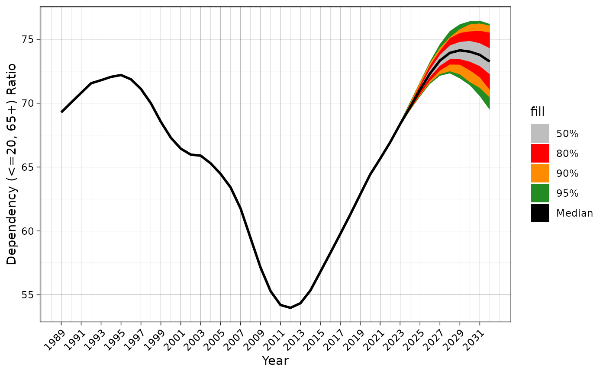
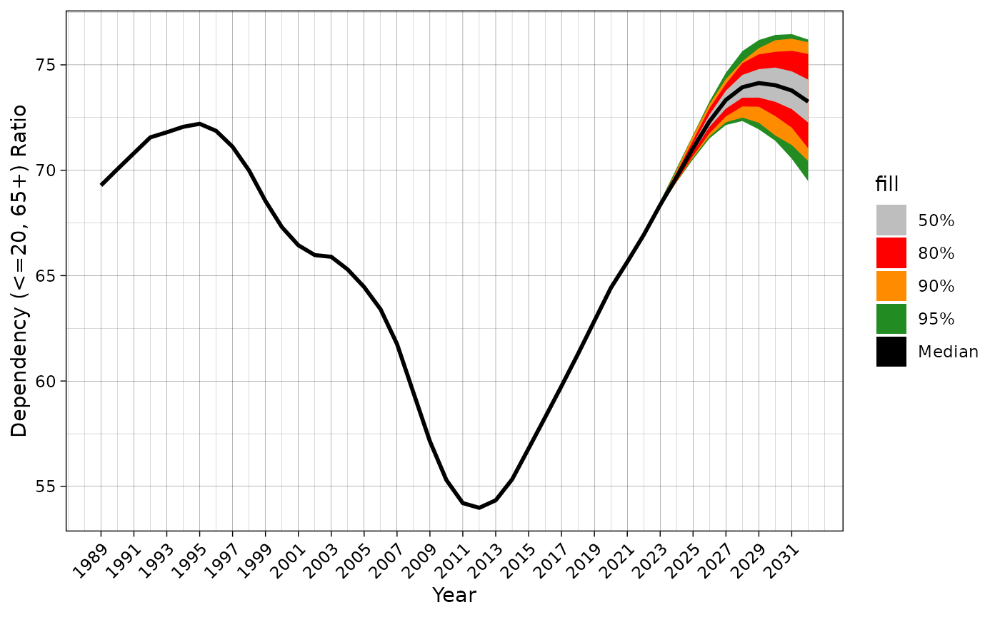
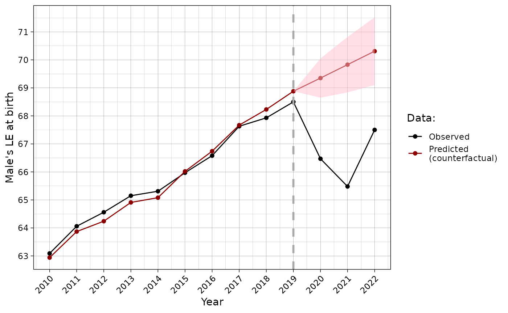

Get started with demor
demor.RmdInstallation
You can install the development version of demor from GitHub with:
# install.packages("devtools")
devtools::install_github("vadvu/demor")Get Rosbris data
DEPRECATED
For getting data from RosBris
there is a function get_rosbris() that can download data on
mortality/fertility by 1/5-year age groups from 1989 to the last
available year (in 2023 its 2022).
Worth noting: downloading and preparing the final file can get some
time.
In the chunk below mortality data (type = "m", for
fertility see Fertility section) for
1-age groups with population in “long” format is loading. For more
function description use ?get_rosbris
# dbm <- get_rosbris(
# #mortality data
# type = "m",
# #what age group download
# age = 1,
# #to get "long" data
# initial = F,
# #last available year (the name of the downloading file contains years, so for the downloading the last year is required)
# lastyear = 2022
# )Recently RosBris has been switched to new website, so the function
get_rosbris does not work now. I hope in a several months
all mistakes due to new website will be fixed and function will
work.
Now RosBris data is presented in the demor as datasets
in the long-format. The example of usage that replicates the data from
the previous chunk with get_rosbris:
dbm <- demor::rosbris_mortality_pop_5
# for 1-year age interval
# dbm <- demor::rosbris_mortality_pop_1Lets see the data for Russia in 2010 for males and for total population (both urban and rural)
dbm[dbm$year==2010 & dbm$code==1100 & dbm$sex=="m" & dbm$territory=="t",]
#> year code territory sex age mx N Dx
#> 20445 2010 1100 t m 0 0.008823 869388 7670.61
#> 20446 2010 1100 t m 1 0.000604 3222450 1946.36
#> 20447 2010 1100 t m 5 0.000355 3613276 1282.71
#> 20448 2010 1100 t m 10 0.000387 3398894 1315.37
#> 20449 2010 1100 t m 15 0.001186 4353344 5163.07
#> 20450 2010 1100 t m 20 0.002546 6193325 15768.21
#> 20451 2010 1100 t m 25 0.004491 6002262 26956.16
#> 20452 2010 1100 t m 30 0.006808 5395865 36735.05
#> 20453 2010 1100 t m 35 0.007934 4973298 39458.15
#> 20454 2010 1100 t m 40 0.009782 4464789 43674.57
#> 20455 2010 1100 t m 45 0.013354 5140274 68643.22
#> 20456 2010 1100 t m 50 0.018567 5207919 96695.43
#> 20457 2010 1100 t m 55 0.026250 4333619 113757.50
#> 20458 2010 1100 t m 60 0.037143 3117320 115786.62
#> 20459 2010 1100 t m 65 0.049925 1573662 78565.08
#> 20460 2010 1100 t m 70 0.068599 2149929 147482.98
#> 20461 2010 1100 t m 75 0.097635 1077916 105242.33
#> 20462 2010 1100 t m 80 0.138043 714191 98589.07
#> 20463 2010 1100 t m 85 0.198593 231350 45944.49
#> name
#> 20445 Российская Федерация
#> 20446 Российская Федерация
#> 20447 Российская Федерация
#> 20448 Российская Федерация
#> 20449 Российская Федерация
#> 20450 Российская Федерация
#> 20451 Российская Федерация
#> 20452 Российская Федерация
#> 20453 Российская Федерация
#> 20454 Российская Федерация
#> 20455 Российская Федерация
#> 20456 Российская Федерация
#> 20457 Российская Федерация
#> 20458 Российская Федерация
#> 20459 Российская Федерация
#> 20460 Российская Федерация
#> 20461 Российская Федерация
#> 20462 Российская Федерация
#> 20463 Российская ФедерацияMortality
Life table
Now one can create life table based on gotten data for
2010-Russia using LT().
Note, \(a_x\) for age 0 is modeled as
in Andreev & Kingkade (2015).
rus2010 <- dbm[dbm$year==2010 & dbm$code==1100 & dbm$sex=="m" & dbm$territory=="t",]
LT(
age = rus2010$age,
sex = "m",
#age specific mortality rates
mx = rus2010$mx)
#> age mx ax qx lx dx Lx Tx ex
#> [1,] 0 0.00882 0.132 0.00876 1.00000 0.00876 0.99240 63.03477 63.03
#> [2,] 1 0.00060 0.500 0.00241 0.99124 0.00239 3.96019 62.04238 62.59
#> [3,] 5 0.00036 0.500 0.00177 0.98885 0.00175 4.93988 58.08218 58.74
#> [4,] 10 0.00039 0.500 0.00193 0.98710 0.00191 4.93072 53.14231 53.84
#> [5,] 15 0.00119 0.500 0.00591 0.98519 0.00582 4.91139 48.21159 48.94
#> [6,] 20 0.00255 0.500 0.01265 0.97937 0.01239 4.86586 43.30020 44.21
#> [7,] 25 0.00449 0.500 0.02221 0.96698 0.02147 4.78120 38.43434 39.75
#> [8,] 30 0.00681 0.500 0.03347 0.94550 0.03165 4.64841 33.65314 35.59
#> [9,] 35 0.00793 0.500 0.03890 0.91386 0.03555 4.48042 29.00473 31.74
#> [10,] 40 0.00978 0.500 0.04774 0.87831 0.04193 4.28672 24.52431 27.92
#> [11,] 45 0.01335 0.500 0.06461 0.83638 0.05404 4.04679 20.23759 24.20
#> [12,] 50 0.01857 0.500 0.08872 0.78234 0.06941 3.73817 16.19080 20.70
#> [13,] 55 0.02625 0.500 0.12317 0.71293 0.08781 3.34513 12.45263 17.47
#> [14,] 60 0.03714 0.500 0.16994 0.62512 0.10623 2.86003 9.10751 14.57
#> [15,] 65 0.04992 0.500 0.22193 0.51889 0.11516 2.30657 6.24748 12.04
#> [16,] 70 0.06860 0.500 0.29278 0.40374 0.11821 1.72316 3.94091 9.76
#> [17,] 75 0.09764 0.500 0.39240 0.28553 0.11204 1.14754 2.21775 7.77
#> [18,] 80 0.13804 0.500 0.51313 0.17349 0.08902 0.64489 1.07021 6.17
#> [19,] 85 0.19859 5.035 1.00000 0.08447 0.08447 0.42532 0.42532 5.04Note, from life table one can compute other functions (not
just \(e_x\) or \(l_x\)) and interesting things:
1. \(CDR = \frac{1}{e_0}\) or Death
rate above some age \(x: 1/e_x\)
2. Probability of surviving from age \(x\) to age \(y\): \(p=l_y/l_x\)
3. Probability that a newborn will die between ages \(x\) and \(x+n\): \(d_x^n/l_0\)
4. Probability that a newborn will die between ages \(x\) and \(y\): \((l_x-l_y)/l_0\)
5. Life course ratio from age \(x\) to
\(y\) that is the fraction of
person-years lived from age \(x\)
onward: \(T_y/T_x\)
6. Crude estimate of the number of births needed to “replace” expected
deaths: \(P/e_0\) where \(P\) is total population
See also Demography handbook by Preston, Heuveline and Guillot (2001,
p. 38-71)
Human Life Indicator (HLI)
A good alternative to the human development indicator (HDI) is the human life indicator (HLI) proposed by Ghislandi, Sanderson and Scherbov (2019). It requires just \(m_x\) (and it is based on life table). It is calculated as geometric mean of lifespans: \[HLI = \prod_x^\omega{(x+a_x)^{d_x}}\] where x is age and a, d are functions from life table.
Lets calculate it using our example data:
hli(
age = rus2010$age,
sex = "m",
mx = rus2010$mx)
#> [1] 55.19236Years of Life Lost (YLL)
One of the most popular (and relatively young) measure of lifespan inequality is “years of life lost” (YLL) proposed by Martinez et al. (2019). As authors claim, “YLL is a valuable measure for public health surveillance, particularly for quantifying the level and trends of premature mortality, identification of leading causes of premature deaths and monitoring the progress of YLL as a key indicator of population health” (ibid., 1368).
Authors proposed different metrics of YLL:
1. Absolute number of YLL: \[YLL_{x,t,c}=D_{x,t,c}*SLE_x\] that is
calculated for age x, time t and cause of death
c. YLL for the whole population is just sum of \(YLL_x\). SLE is the standard
life expectancy that is invariant over time, sex and population
(it’s meaning is straightforward: it is the potential maximum life span
of an individual, who is not exposed to avoidable health risks or severe
injuries and receives appropriate health services), and \(D_x\) is a number of deaths at age
x. Of course, one can calculate YLL not for specific
cause c, but for overall mortality that is called
all-causes YLL.
2. YLL as proportion: \[YLL^p_{x,t,c}=YLL_{x,t,c}/YLL_{x,t}\] that
is just cause specific YLL divided by all-causes
YLL.
3. YLL rate: \[YLL^r_{x,t,c}=[YLL_{x,t,c}/P_{x,t}] *
100'000\] where \(P_{x,t}\)
is population.
4. Age-standardized YLL rate: \[ASYR_{x,t,c} =
\sum_x^\omega{[YLL^r_{x,t,c}*W_x]}\] where \(W_x\) is the standard population weight at
age x, where \(\omega\) is the
oldest, closing age (for ex., 85+ or 100+). In other words, it’s just
direct standardization of \(YLL^r_{x,t,c}\).
Let’s calculate all-cause YLL, Yll rate and ASYR using Rosbris data that we have downloaded.
#YLL
yll(rus2010$Dx, type = "yll")
#> $yll_all
#> [1] 33640561
#>
#> $yll
#> [1] 705159.2 174024.0 108414.6 104611.4 384855.2 1096994.4 1741367.9
#> [8] 2190511.0 2157177.1 2171936.4 3075902.7 3860081.6 3989475.5 3502545.3
#> [15] 2002623.9 3063221.5 1729131.5 1233349.3 349178.1
#YLL rate
yll(rus2010$Dx, type = "yll.r", pop = rus2010$N)
#> $yll.r_all
#> [1] 50945.02
#>
#> $yll.r
#> [1] 81109.836 5400.365 3000.453 3077.806 8840.451 17712.527
#> [7] 29011.861 40596.105 43375.182 48645.890 59839.275 74119.462
#> [13] 92058.751 112357.578 127258.833 142480.124 160414.307 172691.796
#> [19] 150930.678For ASYR one needs standard population. Let’s use 2010 population as standard (note, in this case ASYR equals YLL rate because we use 2010 mortality).
#ASYR
yll(rus2010$Dx, type = "asyr", pop = rus2010$N, w = rus2010$N/sum(rus2010$N))
#> $asyr
#> [1] 1067.8879 263.5407 164.1824 158.4227 582.8220 1661.2803 2637.1149
#> [8] 3317.2939 3266.8132 3289.1646 4658.1245 5845.6793 6041.6326 5304.2289
#> [15] 3032.7590 4638.9202 2618.5841 1867.7751 528.7928
#>
#> $asyr_all
#> [1] 50945.02Also one can calculate different YLL measures using
standards that are provided by demor as dataframe.
demor::sle_standAge decomposition of differences in life expectancies
Also one can do simple decomposition between 2 populations. Lets use Russia-2000 as base population and Russia-2010 as compared population
rus2010 <- dbm[dbm$year==2010 & dbm$code==1100 & dbm$sex=="m" & dbm$territory=="t",]
rus2000 <- dbm[dbm$year==2000 & dbm$code==1100 & dbm$sex=="m" & dbm$territory=="t",]
dec <- decomp(mx1 = rus2000$mx,
mx2 = rus2010$mx,
sex = "m",
age = rus2000$age,
method = "andreev")
head(dec)
#> age ex1 ex2 lx2 dex ex12 ex12_prc
#> 1 0 58.98 63.03 1.00000 4.05 0.53 13.022113
#> 2 1 59.04 62.59 0.99124 3.55 0.11 2.702703
#> 3 5 55.29 58.74 0.98885 3.45 0.07 1.719902
#> 4 10 50.45 53.84 0.98710 3.39 0.05 1.228501
#> 5 15 45.59 48.94 0.98519 3.35 0.21 5.159705
#> 6 20 41.05 44.21 0.97937 3.16 0.45 11.056511Than let us plot the result of decomp using
ggplot2:
library(ggplot2)
ggplot(dec, aes( as.factor(age), ex12))+
geom_bar(stat = "identity", color = "black", fill = "orange3")+
theme_minimal()+
labs(x = "Age-groups",
y = "Сontribution to the e0 difference")+
annotate("text", x = "70", y = 0.5, label = paste0("Total difference in e0: ", sum(dec$ex12)))+
geom_text(aes(label = ex12), vjust = 1.5, color = "white", size = 3.5)
Age and cause decomposition of differences in life expectancies
Also one can do decomposition between 2 populations by
age and causes. Lets use example from Andreev &
Shkolnikov spreadsheet
where data for US and England and Wales men mortality by some causes are
presented.
Lets see the data
data("mdecompex")
head(mdecompex)
#> # A tibble: 6 × 9
#> age neoplasms circulatory respiratory digestive accident other all
#> <dbl> <dbl> <dbl> <dbl> <dbl> <dbl> <dbl> <dbl>
#> 1 0 0.0000349 0.000173 0.000188 0.000151 0.000377 0.00669 7.62e-3
#> 2 1 0.0000309 0.0000155 0.0000220 0.00000930 0.000163 0.000112 3.53e-4
#> 3 5 0.0000313 0.00000560 0.00000687 0.00000324 0.0000792 0.0000409 1.67e-4
#> 4 10 0.0000305 0.0000127 0.00000896 0.00000286 0.000127 0.0000490 2.31e-4
#> 5 15 0.0000424 0.0000322 0.0000141 0.00000401 0.000765 0.0000821 9.40e-4
#> 6 20 0.0000600 0.0000511 0.0000158 0.00000928 0.00114 0.000130 1.41e-3
#> # ℹ 1 more variable: cnt <chr>For mdecomp 2 lists with arrays for 2 population are
required.
#US men
mx1 <- list(all = mdecompex[mdecompex$cnt=="usa",]$all,
neoplasm = mdecompex[mdecompex$cnt=="usa",]$neoplasms,
circulatory = mdecompex[mdecompex$cnt=="usa",]$circulatory,
respiratory = mdecompex[mdecompex$cnt=="usa",]$respiratory,
digestive = mdecompex[mdecompex$cnt=="usa",]$digestive,
accident = mdecompex[mdecompex$cnt=="usa",]$accident,
other = mdecompex[mdecompex$cnt=="usa",]$other)
#England and Wales men
mx2 <- list(all = mdecompex[mdecompex$cnt=="eng",]$all,
neoplasm = mdecompex[mdecompex$cnt=="eng",]$neoplasms,
circulatory = mdecompex[mdecompex$cnt=="eng",]$circulatory,
respiratory = mdecompex[mdecompex$cnt=="eng",]$respiratory,
digestive = mdecompex[mdecompex$cnt=="eng",]$digestive,
accident = mdecompex[mdecompex$cnt=="eng",]$accident,
other = mdecompex[mdecompex$cnt=="eng",]$other)
decm <- mdecomp(mx1 = mx1,
mx2 = mx2,
sex = "m",
age = unique(mdecompex$age)
)
head(decm)
#> age ex12 neoplasm circulatory respiratory digestive accident
#> 1 0 0.12 0.0008745885 6.544742e-03 0.0038965543 6.616401e-03 0.02107294
#> 2 1 0.03 -0.0025030458 5.483996e-04 0.0020247182 6.245908e-04 0.03637029
#> 3 5 0.02 -0.0016468368 8.262058e-05 -0.0001300012 9.929857e-05 0.02178479
#> 4 10 0.01 -0.0014084238 4.993427e-04 -0.0002451017 8.338450e-05 0.01117647
#> 5 15 0.13 -0.0032690840 2.657675e-03 0.0005053688 -2.052103e-04 0.13796276
#> 6 20 0.17 -0.0009648903 2.773336e-03 -0.0016773417 -8.983808e-04 0.18353643
#> other
#> 1 0.0809947781
#> 2 -0.0070649563
#> 3 -0.0001898743
#> 4 -0.0001056675
#> 5 -0.0076515085
#> 6 -0.0127691565Than let us plot the result of mdecomp using ggplot2. This requires
some data transformations
library(ggplot2)
decm_plot <- decm[,c(1,3)]
decm_plot$group = colnames(decm)[3]
colnames(decm_plot)[2]<-"ex12"
for(i in 4:ncol(decm)){
decm_plot_i <- decm[,c(1,i)]
decm_plot_i$group = colnames(decm)[i]
colnames(decm_plot_i)[2]<-"ex12"
decm_plot <- rbind(decm_plot,decm_plot_i)
rm(decm_plot_i)
}
for (i in unique(decm_plot$group)){
decm_plot[decm_plot$group==i,]$group <- paste0(i, " (", round(sum(decm_plot[decm_plot$group==i,]$ex12),2), ")")
}
ggplot(data = decm_plot, aes(x = as.factor(age), y = ex12, fill = group))+
geom_bar(stat="identity", colour = "black")+
theme_minimal()+
scale_fill_brewer(palette="Set1")+
labs(x = "Age", y = "Contribution to difference in ex", fill = "Cause (contribution):",
caption = paste0("Total difference in ex = ", sum(decm[,2]))
)
Associated single decrement life table
There is asdt() function that calculates associated
single decrement life table (ASDT) for causes of death
(cause-deleted life table). In other words, by this function
one can answer the question “what will be the life expectancy if there
is no mortality from cause i?”
For example in the demor data (as it is easy to guess,
taken from Andreev & Shkolnikov spreadsheet)
on mortality of US men in 2002 by some causes is added. Let me show what
would be \(e_x\) if there is no deaths
from neoplasm (i)
data("asdtex")
asdt_neoplasm <- asdt(age = asdtex$age,
sex = "m",
m_all = asdtex$all,
m_i = asdtex$neoplasms,
full = F,
method = "chiang1968")
head(asdt_neoplasm[,c("age", "ex", "ex_without_i")])
#> age ex ex_without_i
#> 1 0 74.65 78.58
#> 2 1 74.22 78.18
#> 3 5 70.32 74.28
#> 4 10 65.38 69.33
#> 5 15 60.45 64.39
#> 6 20 55.72 59.67One can plot the results using ggplot2:
library(ggplot2)
ggplot(data = asdt_neoplasm, aes(x = age))+
geom_line(aes(y = ex, color = "ex"), size = 1)+
geom_line(aes(y = ex_without_i, color = "ex without neoplasms"), size = 1)+
theme_minimal()
ggplot(data = asdt_neoplasm, aes(x = age))+
geom_line(aes(y = lx, color = "ex"), size = 1)+
geom_line(aes(y = l_not_i, color = "ex without neoplasms"), size = 1)+
geom_hline(yintercept = 0.5, linetype = "dashed")+
theme_classic()
Mortality models for mx approximation
In demor there is a function mort.approx
for modeling mx. Now “Gompertz” and “Brass” are supported (see Preston,
Heuveline & Guillot, 2001 for more details on the functions).
Function returns list with estimated model (parameters, R-squred, variance-covariance matrix of parameters) and dataframe with predicted mx.
The example below shows the model that try to approximate mx of russian men in 2010 using Brass function and rissian mortality of 2000 as standard mortality.
rus2010 <- dbm[dbm$year==2010 & dbm$code==1100 & dbm$sex=="m" & dbm$territory=="t",]
rus2000 <- dbm[dbm$year==2000 & dbm$code==1100 & dbm$sex=="m" & dbm$territory=="t",]
brass_2010 <- mort.approx(mx = rus2010$mx,
age = rus2010$age,
model = "Brass",
standard.mx = rus2000$mx,
boot = T)
brass_2010[[1]]
#> $type
#> [1] "Brass"
#>
#> $params
#> a b
#> -0.06074055 1.07357088
#>
#> $covmat
#> a b
#> a 0.0011738655 0.0005893843
#> b 0.0005893843 0.0004137586Lets plot the modeled and observed mx with bootstrapped 95% CI.
brass_2010[[2]] %>%
mutate(mx = rus2010$mx) %>%
ggplot(aes(x = age))+
geom_line(aes(y = log(mx), color = "Observed"), linewidth = 1)+
geom_line(aes(y = log(mx.pred), color = "Predicted"), linewidth = 1)+
geom_ribbon(aes(ymin = log(low_2.5prc), ymax = log(high_97.5prc)),
alpha = 0, color = "red", linetype = "dashed")+
theme_classic()+
scale_color_manual(values = c("blue", "red"))+
labs(x = "Age", y = "ln mx")
Fertility
For the analysis of fertility in the demor there are
only a few functions, due to the author’s preference for mortality
analysis…
Get fertility data
DEPRECATED
Lets get basic fertility data (asFR or \(f_x\)) from RosBris
using get_rosbris()
# dbf <- get_rosbris(
# #fertility data
# type = "f",
# #what age group download
# age = 1,
# #to get "long" data
# initial = F,
# #last available year
# lastyear = 2022
# )Recently RosBris has been switched to new website, so the function
get_rosbris does not work now. I hope in a several months
all mistakes due to new website will be fixed and function will
work.
Now RosBris data is presented in the demor as datasets
in the long-format. The example of usage that replicates the data from
the previous chunk with get_rosbris:
Also not that there is data only for 1-year age intervals now due to mistakes on the new RosBris website…
dbf <- demor::rosbris_fertility_pop_1For the example Russia-2010 is gotten
rus2010f <- dbf[dbf$year==2010 & dbf$code==1100 & dbf$territory=="t",]
rus2010f
#> year code territory age fx N Bx name
#> 16155 2010 1100 t 15 0.002828 718636 2032.30 Российская Федерация
#> 16156 2010 1100 t 16 0.007868 738942 5814.00 Российская Федерация
#> 16157 2010 1100 t 17 0.019538 806058 15748.76 Российская Федерация
#> 16158 2010 1100 t 18 0.036598 915096 33490.68 Российская Федерация
#> 16159 2010 1100 t 19 0.054816 1035519 56763.01 Российская Федерация
#> 16160 2010 1100 t 20 0.068020 1128146 76736.49 Российская Федерация
#> 16161 2010 1100 t 21 0.079420 1171368 93030.05 Российская Федерация
#> 16162 2010 1100 t 22 0.088931 1227186 109134.88 Российская Федерация
#> 16163 2010 1100 t 23 0.097337 1253198 121982.53 Российская Федерация
#> 16164 2010 1100 t 24 0.101037 1247182 126011.53 Российская Федерация
#> 16165 2010 1100 t 25 0.103926 1229049 127730.15 Российская Федерация
#> 16166 2010 1100 t 26 0.105334 1225430 129079.44 Российская Федерация
#> 16167 2010 1100 t 27 0.102049 1205347 123004.46 Российская Федерация
#> 16168 2010 1100 t 28 0.096021 1144048 109852.63 Российская Федерация
#> 16169 2010 1100 t 29 0.087114 1154109 100539.05 Российская Федерация
#> 16170 2010 1100 t 30 0.081186 1147757 93181.80 Российская Федерация
#> 16171 2010 1100 t 31 0.076022 1103356 83879.33 Российская Федерация
#> 16172 2010 1100 t 32 0.067751 1089992 73848.05 Российская Федерация
#> 16173 2010 1100 t 33 0.059360 1080930 64164.00 Российская Федерация
#> 16174 2010 1100 t 34 0.051026 1093922 55818.46 Российская Федерация
#> 16175 2010 1100 t 35 0.043833 1080620 47366.82 Российская Федерация
#> 16176 2010 1100 t 36 0.037177 1043520 38794.94 Российская Федерация
#> 16177 2010 1100 t 37 0.028480 1033189 29425.22 Российская Федерация
#> 16178 2010 1100 t 38 0.022616 1016060 22979.21 Российская Федерация
#> 16179 2010 1100 t 39 0.016427 1014281 16661.59 Российская Федерация
#> 16180 2010 1100 t 40 0.011828 985504 11656.54 Российская Федерация
#> 16181 2010 1100 t 41 0.008071 933120 7531.21 Российская Федерация
#> 16182 2010 1100 t 42 0.005070 923786 4683.60 Российская Федерация
#> 16183 2010 1100 t 43 0.002934 937586 2750.88 Российская Федерация
#> 16184 2010 1100 t 44 0.001530 984033 1505.57 Российская Федерация
#> 16185 2010 1100 t 45 0.000698 1027529 717.22 Российская Федерация
#> 16186 2010 1100 t 46 0.000345 1080939 372.92 Российская Федерация
#> 16187 2010 1100 t 47 0.000189 1147414 216.86 Российская Федерация
#> 16188 2010 1100 t 48 0.000080 1203214 96.26 Российская Федерация
#> 16189 2010 1100 t 49 0.000058 1279641 74.22 Российская Федерация
#> 16190 2010 1100 t 50 0.000022 1290011 28.38 Российская Федерация
#> 16191 2010 1100 t 51 0.000011 1254347 13.80 Российская Федерация
#> 16192 2010 1100 t 52 0.000016 1242620 19.88 Российская Федерация
#> 16193 2010 1100 t 53 0.000007 1212329 8.49 Российская Федерация
#> 16194 2010 1100 t 54 0.000006 1204291 7.23 Российская Федерация
#> 16195 2010 1100 t 55 0.000008 1213611 9.71 Российская ФедерацияTFR
Now one can compute total fertility age (TFR) - the most popular measure of fertility - that is standardized measure of “the average number of children a woman would bear if she survived through the end of the reproductive age span and experienced at each age a particular set of age-specific fertility ages” Preston et al, 2001, p. 95.
tfr(
#asFR
rus2010f$fx,
#age interval
age.int = 1
)
#> [1] 1.565588MAC
MAC is a mean age at childbearing. One can compute it using \(f_x\)
mac(
#asFR
rus2010f$fx,
#array with ages
ages = 15:55
)
#> [1] 27.65494Fertility models for ASFR approximation
In demor there is a function fert.approx
for modeling ASFR. Now “Hadwiger”, “Gamma” and “Brass” are supported
(see Peristera & Kostaki, 2007 for more details on the
functions).
Hadwiger model (optimal choice with balance of simplicity and accuracy) is as follows: \[f(age) = \frac{ab}{c} \frac{c}{age}^{3/2} exp[-b^2(\frac{c}{age}+\frac{age}{c}-2)]\]
Gamma model (sophisticated and accurate, but not really sustainable due to convergence issues) is as follows: \[f(age) = \frac{R}{\Gamma(b)c^b}(age-d)^{b-1} exp[-(\frac{age-d}{c})]\]
Brass model (the simplest and the most inaccurate) is as follows: \[f(age) = c(age-d)(d+w-age)\]
Function returns list with estimated model (parameters, R-squred, variance-covariance matrix of parameters) and dataframe with predicted ASFR.
The example below shows the model that try to approximate ASFR of russian women in 2010 using Gamma function.
approximation_2010 = fert.approx(fx = rus2010f$fx, age = 15:55, model = "Gamma", boot = T)
approximation_2010[[1]]
#> $type
#> [1] "Gamma"
#>
#> $params
#> R b c d
#> 1.603204 8.512910 2.161928 9.048034
#>
#> $Rsq
#> [1] 0.9954142
#>
#> $covmat
#> R b c d
#> R 0.0002956914 -0.002461275 0.0006176426 0.0006317489
#> b -0.0024612750 1.668815802 -0.2388863457 -1.6943450227
#> c 0.0006176426 -0.238886346 0.0349105043 0.2375133186
#> d 0.0006317489 -1.694345023 0.2375133186 1.7605961160Lets plot the modeled and observed ASFR with bootstrapped 95% CI. One can see that model perfectly approximates real ASFR from 15 to 40 ages, while after the fit is not really good. Meanwhile, the model explains 99.7% of variance in observed ASFR.
data = approximation_2010[[2]]
ggplot()+
theme_bw()+
geom_line(data = data, aes(x = age, y = predicted, color = "fx from Gamma model"), linewidth = 1)+
geom_ribbon(data = data,
aes(ymin = low_2.5prc, ymax = high_97.5prc, x = age, color = "95% CI"), alpha = 0, linetype = "dashed")+
geom_line(data = data.frame(real = rus2010f$fx, age = 15:55), aes(x = age, y = real, color = "Observed fx"), linewidth = 1)+
scale_color_manual(values = c("red", "red", "blue"))+
labs(y = "fx", x = "Age")Lets now do the same procedure but with Hadwiger function:
data = fert.approx(fx = rus2010f$fx, age = 15:55, model = "Hadwiger", boot = T)[[2]]
ggplot()+
theme_bw()+
geom_line(data = data, aes(x = age, y = predicted, color = "fx from Hadwiger model"), linewidth = 1)+
geom_ribbon(data = data,
aes(ymin = low_2.5prc, ymax = high_97.5prc, x = age, color = "95% CI"), alpha = 0, linetype = "dashed")+
geom_line(data = data.frame(real = rus2010f$fx, age = 15:55), aes(x = age, y = real, color = "Observed fx"), linewidth = 1)+
scale_color_manual(values = c("red", "red", "blue"))+
labs(y = "fx", x = "Age")
Lets now do the same procedure but with Brass function:
data = fert.approx(fx = rus2010f$fx, age = 15:55, model = "Brass", boot = T)[[2]]
ggplot()+
theme_bw()+
geom_line(data = data, aes(x = age, y = predicted, color = "fx from Brass model"), linewidth = 1)+
geom_ribbon(data = data,
aes(ymin = low_2.5prc, ymax = high_97.5prc, x = age, color = "95% CI"), alpha = 0, linetype = "dashed")+
geom_line(data = data.frame(real = rus2010f$fx, age = 15:55), aes(x = age, y = real, color = "Observed fx"), linewidth = 1)+
scale_color_manual(values = c("red", "red", "blue"))+
labs(y = "fx", x = "Age")
Projections
Lee-Carter model
In the demor there is leecart() function
that provides users with basic Lee-Carter model (proposed by
Lee and Carter in 1992 and that now has a lot of extensions) for
mortality forecasting:
dbm.1 <- demor::rosbris_mortality_pop_1
leecart_forecast <- leecart(data = dbm.1[dbm.1$code==1100 &
dbm.1$territory=="t" &
dbm.1$sex=="m" &
dbm.1$year %in% 2004:2019,c("year", "age", "mx")],
n = 5,
sex = "m",
concise = T
)
head(leecart_forecast)
#> year age mx mx_low95 mx_high95 ex ex_low95 ex_high95
#> 1 2020 0 0.0051383321 0.0048555214 0.0054376152 69.44 68.86 70.03
#> 2 2020 1 0.0004663746 0.0004393745 0.0004950340 68.80 68.24 69.37
#> 3 2020 2 0.0002934932 0.0002756235 0.0003125214 67.83 67.27 68.40
#> 4 2020 3 0.0002396593 0.0002248883 0.0002554005 66.85 66.29 67.42
#> 5 2020 4 0.0002001969 0.0001869453 0.0002143880 65.87 65.31 66.43
#> 6 2020 5 0.0001918685 0.0001805702 0.0002038738 64.88 64.32 65.44One can plot the results using ggplot2 to comapare predicted data with actual that, however, requires some data handling:
#LE data calculation
ledata <- data.frame(year = 2010:2022, lem = NA, lem.predicted = NA, ci.low = NA, ci.high = NA)
for(i in 2010:2022){
ledata[ledata$year==i,2] <- LT(age = unique(dbm$age),
sex = "m",
mx = dbm[dbm$year==i &
dbm$territory == "t" &
dbm$code == 1100 &
dbm$sex == "m",]$mx)[1,"ex"]
if(i>=2019){
if(i==2019){
ledata[ledata$year==i,3:5] <- rep(ledata[ledata$year==i,2],3)
}else{
ledata[ledata$year==i,3:5] <- leecart_forecast[leecart_forecast$age=="0" &
leecart_forecast$year == i,6:8] %>% as.numeric()
}
}
}
ggplot(data = ledata, aes(x = year))+
geom_point(aes(y = lem, color = "Observed data"))+
geom_line(aes(y = lem, color = "Observed data"))+
geom_point(aes(y = lem.predicted, color = "Predicted data"))+
geom_line(aes(y = lem.predicted, color = "Predicted data"))+
geom_ribbon(aes(ymin = ci.low, ymax = ci.high), fill = "pink", alpha = 0.5)+
geom_vline(xintercept = 2019, linetype = "dashed", color = "darkgrey", size = 1)+
scale_x_continuous(breaks = 2010:2022)+
scale_y_continuous(breaks = 63:70)+
theme_minimal()+
theme(axis.text.x = element_text(angle = 45, vjust = 1, hjust=1))+
scale_color_manual(values = c("black", "darkred"))+
labs(x="Year", y = "Male's LE at birth", colour = "")
Leslie matrix
In beta now.
les.matrix <- leslie(mx = dbm.1[dbm.1$code==1100 &
dbm.1$territory=="t" &
dbm.1$sex=="m" &
dbm.1$year == 2019,]$mx,
fx = dbf[dbm.1$code==1100 &
dbm.1$territory=="t" &
dbm.1$year == 2019,]$fx,
age1 = unique(dbm.1$age),
age2 = unique(dbf$age),
sex = "m")
les.matrix[1:5, 1:5]
#> [,1] [,2] [,3] [,4] [,5]
#> [1,] 0.0000000 0.0000000 0.0000000 0.0000000 0
#> [2,] 0.9990357 0.0000000 0.0000000 0.0000000 0
#> [3,] 0.0000000 0.9995978 0.0000000 0.0000000 0
#> [4,] 0.0000000 0.0000000 0.9997284 0.0000000 0
#> [5,] 0.0000000 0.0000000 0.0000000 0.9997585 0Probabilistic model
Soon, now beta version is done.
Data handling for the model.
mort.m <- dbm.1 %>%
filter(territory == "t") %>%
filter(name == "Российская Федерация") %>%
filter(sex == "m") %>%
select(year,age, mx)
mort.f <- dbm.1 %>%
filter(territory == "t") %>%
filter(name == "Российская Федерация") %>%
filter(sex == "f") %>%
select(year,age, mx)
fert <- dbf %>%
filter(territory == "t") %>%
filter(name == "Российская Федерация") %>%
select(year, age, fx)
popm = dbm.1 %>%
filter(territory == "t") %>%
filter(name == "Российская Федерация") %>%
filter(sex == "m") %>%
select(year,age, pop = N)
popf = dbm.1 %>%
filter(territory == "t") %>%
filter(name == "Российская Федерация") %>%
filter(sex == "f") %>%
select(year,age, pop = N)The model:
ex1 <- prob.proj(mort.m, mort.f, fert,
time.n = 25,
sims = 250, #set low number for an example
popf, popm)Population projection:
ex1[[1]] %>%
ggplot(aes(x = year))+
theme_linedraw()+
geom_ribbon(aes(ymin = `0.025popf` + `0.025popm`, ymax = `0.925popf` + `0.925popm`),
alpha = 1, fill = "forestgreen")+
geom_ribbon(aes(ymin = `0.125popf` + `0.125popm`, ymax = `0.825popf` + `0.825popm`),
alpha = 1, fill = "darkorange")+
geom_ribbon(aes(ymin = `0.225popf` + `0.225popm`, ymax = `0.725popf` + `0.725popm`),
alpha = 1, fill = "red")+
geom_ribbon(aes(ymin = `0.425popf` + `0.425popm`, ymax = `0.625popf` + `0.625popm`),
alpha = 1, fill = "grey")+
geom_line(aes(y = `0.5popf` + `0.5popm`), color = "black", linewidth = 1)+
scale_y_continuous(labels = scales::unit_format(unit = "k", scale = 1e-3))+
labs(y = "Population", x = "Year")+
scale_x_continuous(breaks = seq(min(ex1[[1]]$year), max(ex1[[1]]$year), 2))+
theme(axis.text.x = element_text(angle = 45, hjust = 1))
Net population growth:
ex1[[1]] %>%
ggplot(aes(x = year))+
theme_linedraw()+
geom_ribbon(aes(ymin = `0.025net`, ymax = `0.925net`),
alpha = 1, fill = "forestgreen")+
geom_ribbon(aes(ymin = `0.125net`, ymax = `0.825net`),
alpha = 1, fill = "darkorange")+
geom_ribbon(aes(ymin = `0.225net`, ymax = `0.725net`),
alpha = 1, fill = "red")+
geom_ribbon(aes(ymin = `0.425net`, ymax = `0.625net`),
alpha = 1, fill = "grey")+
geom_hline(yintercept = 0)+
geom_line(aes(y = `0.5net`), color = "black", linewidth = 1)+
scale_y_continuous(labels = scales::unit_format(unit = "k", scale = 1e-3))+
labs(y = "Net population growth", x = "Year")+
scale_x_continuous(breaks = seq(min(ex1[[1]]$year), max(ex1[[1]]$year), 2))+
theme(axis.text.x = element_text(angle = 45, hjust = 1))
TFR projection:
ex1[[1]] %>%
ggplot(aes(x = year))+
theme_linedraw()+
geom_ribbon(aes(ymin = `0.025tfr`, ymax = `0.925tfr`),
alpha = 1, fill = "forestgreen")+
geom_ribbon(aes(ymin = `0.125tfr`, ymax = `0.825tfr`),
alpha = 1, fill = "darkorange")+
geom_ribbon(aes(ymin = `0.225tfr`, ymax = `0.725tfr`),
alpha = 1, fill = "red")+
geom_ribbon(aes(ymin = `0.425tfr`, ymax = `0.625tfr`),
alpha = 1, fill = "grey")+
geom_line(aes(y = `0.5tfr`), color = "black", linewidth = 1)+
labs(y = "TFR", x = "Year")+
scale_x_continuous(breaks = seq(min(ex1[[1]]$year), max(ex1[[1]]$year), 2))+
theme(axis.text.x = element_text(angle = 45, hjust = 1))
Life expectancy at birth projections:
e0m.proj <- ex1[[1]] %>%
ggplot(aes(x = year))+
theme_linedraw()+
geom_ribbon(aes(ymin = `0.025e0m`, ymax = `0.925e0m`),
alpha = 1, fill = "forestgreen")+
geom_ribbon(aes(ymin = `0.125e0m`, ymax = `0.825e0m`),
alpha = 1, fill = "darkorange")+
geom_ribbon(aes(ymin = `0.225e0m`, ymax = `0.725e0m`),
alpha = 1, fill = "red")+
geom_ribbon(aes(ymin = `0.425e0m`, ymax = `0.625e0m`),
alpha = 1, fill = "grey")+
geom_line(aes(y = `0.5e0m`), color = "black", linewidth = 1)+
labs(y = "Life Expectancy at 0 (males)", x = "Year")+
scale_x_continuous(breaks = seq(min(ex1[[1]]$year), max(ex1[[1]]$year), 2))+
theme(axis.text.x = element_text(angle = 45, hjust = 1))
e0f.proj <- ex1[[1]] %>%
ggplot(aes(x = year))+
theme_linedraw()+
geom_ribbon(aes(ymin = `0.025e0f`, ymax = `0.925e0f`),
alpha = 1, fill = "forestgreen")+
geom_ribbon(aes(ymin = `0.125e0f`, ymax = `0.825e0f`),
alpha = 1, fill = "darkorange")+
geom_ribbon(aes(ymin = `0.225e0f`, ymax = `0.725e0f`),
alpha = 1, fill = "red")+
geom_ribbon(aes(ymin = `0.425e0f`, ymax = `0.625e0f`),
alpha = 1, fill = "grey")+
geom_line(aes(y = `0.5e0f`), color = "black", linewidth = 1)+
labs(y = "Life Expectancy at 0 (females)", x = "Year")+
scale_x_continuous(breaks = seq(min(ex1[[1]]$year), max(ex1[[1]]$year), 2))+
theme(axis.text.x = element_text(angle = 45, hjust = 1))
e0m.proj;e0f.proj 

Median age:
ex1[[1]] %>%
ggplot(aes(x = year))+
theme_linedraw()+
geom_ribbon(aes(ymin = `0.025med.age`, ymax = `0.925med.age`),
alpha = 1, fill = "forestgreen")+
geom_ribbon(aes(ymin = `0.125med.age`, ymax = `0.825med.age`),
alpha = 1, fill = "darkorange")+
geom_ribbon(aes(ymin = `0.225med.age`, ymax = `0.725med.age`),
alpha = 1, fill = "red")+
geom_ribbon(aes(ymin = `0.425med.age`, ymax = `0.625med.age`),
alpha = 1, fill = "grey")+
geom_line(aes(y = `0.5med.age`), color = "black", linewidth = 1)+
labs(y = "Median age", x = "Year")+
scale_x_continuous(breaks = seq(min(ex1[[1]]$year), max(ex1[[1]]$year), 2))+
theme(axis.text.x = element_text(angle = 45, hjust = 1))
Dependency ratios:
dep.old <- ex1[[1]] %>%
ggplot(aes(x = year))+
theme_linedraw()+
geom_ribbon(aes(ymin = `0.025old.dependency`, ymax = `0.925old.dependency`),
alpha = 1, fill = "forestgreen")+
geom_ribbon(aes(ymin = `0.125old.dependency`, ymax = `0.825old.dependency`),
alpha = 1, fill = "darkorange")+
geom_ribbon(aes(ymin = `0.225old.dependency`, ymax = `0.725old.dependency`),
alpha = 1, fill = "red")+
geom_ribbon(aes(ymin = `0.425old.dependency`, ymax = `0.625old.dependency`),
alpha = 1, fill = "grey")+
geom_line(aes(y = `0.5old.dependency`), color = "black", linewidth = 1)+
labs(y = "Old-age (65+) dependency ratio", x = "Year")+
scale_x_continuous(breaks = seq(min(ex1[[1]]$year), max(ex1[[1]]$year), 2))+
theme(axis.text.x = element_text(angle = 45, hjust = 1))
dep.all <- ex1[[1]] %>%
ggplot(aes(x = year))+
theme_linedraw()+
geom_ribbon(aes(ymin = `0.025dependency`, ymax = `0.925dependency`),
alpha = 1, fill = "forestgreen")+
geom_ribbon(aes(ymin = `0.125dependency`, ymax = `0.825dependency`),
alpha = 1, fill = "darkorange")+
geom_ribbon(aes(ymin = `0.225dependency`, ymax = `0.725dependency`),
alpha = 1, fill = "red")+
geom_ribbon(aes(ymin = `0.425dependency`, ymax = `0.625dependency`),
alpha = 1, fill = "grey")+
geom_line(aes(y = `0.5dependency`), color = "black", linewidth = 1)+
labs(y = "Dependency (<=20, 65+) Ratio", x = "Year")+
scale_x_continuous(breaks = seq(min(ex1[[1]]$year), max(ex1[[1]]$year), 2))+
theme(axis.text.x = element_text(angle = 45, hjust = 1))
dep.old; dep.all
Other functions
Population pyramid
plot_pyr plots population pyramid using ggplot2
Lets create population pyramid using midyear population from Rosbris
mortality data. We already have data in dbm.
plot_pyr(
popm = dbm[dbm$year==2010 & dbm$code==1100 & dbm$territory=="t" & dbm$sex=="m",]$N,
popf = dbm[dbm$year==2010 & dbm$code==1100 & dbm$territory=="t" & dbm$sex=="f",]$N,
ages = dbm[dbm$year==2010 & dbm$code==1100 & dbm$territory=="t" & dbm$sex=="f",]$age)
Also one can redesigned plot using ggplot2 functions:
plot <-
plot_pyr(
popm = dbm[dbm$year==2010 & dbm$code==1100 & dbm$territory=="t" & dbm$sex=="m",]$N,
popf = dbm[dbm$year==2010 & dbm$code==1100 & dbm$territory=="t" & dbm$sex=="f",]$N,
ages = dbm[dbm$year==2010 & dbm$code==1100 & dbm$territory=="t" & dbm$sex=="f",]$age)
plot +
labs(y = "My y", x = "Age")+
theme_minimal()
Median age
#Using 1-year age interval
med.age(N = dbm.1[dbm.1$year==2010 & dbm.1$code==1100 & dbm.1$territory=="t" & dbm.1$sex=="m",]$N,
age = dbm.1[dbm.1$year==2010 & dbm.1$code==1100 & dbm.1$territory=="t" & dbm.1$sex=="m",]$age,
int = 1)
#> [1] 34.96885
#Using 5-year age interval
med.age(N = dbm[dbm$year==2010 & dbm$code==1100 & dbm$territory=="t" & dbm$sex=="m",]$N,
age = dbm[dbm$year==2010 & dbm$code==1100 & dbm$territory=="t" & dbm$sex=="m",]$age,
int = 5)
#> [1] 34.99351Recoding age
ages converts continuous ages to age groups. For
example, array with \(\{ 0,1,2,3...100
\}\) it can convert to \(\{<5,6-9,10-14 ... 85+ \}\) using
user-specific lower boundaries.
groups <- c(0, 1, 5, 10, 20, 45, 85) #lower boundaries of age groups
age <- sample(0:100, 101) #simulated array with ages
new.age <- ages(x = age, groups = groups, char = TRUE)
table(new.age) #see new groups with the number of values in the group
#> new.age
#> 0 1-4 5-9 10-19 20-44 45-84 85+
#> 1 4 5 10 25 40 16References
- Center for Demographic Research (2023). Russian Fertility and
Mortality Database (Rosbris). URL
- Preston, S. H., Heuveline, P., & Guillot, M. (2001). Demography:
Measuring and modeling population processes. Blackwell Publishers. (pdf)
- Andreev, E. M., & Kingkade, W. W. (2015). Average age at death
in infancy and infant mortality level: Reconsidering the Coale-Demeny
formulas at current levels of low mortality. Demographic
Research, 33, 363-390.
- Ghislandi, S., Sanderson, W. C., & Scherbov, S. (2019). A simple
measure of human development: The human life indicator. Population
and development review, 45(1), 219-233.
- Andreev, E. M., & Shkolnikov, V. M. (2012). An Excel
spreadsheet for the decomposition of a difference between two values of
an aggregate demographic measure by stepwise replacement running from
young to old ages. MPIDR Technical Report TR-2012-002. URL
- Lee, R. D., & Carter, L. R. (1992). Modeling and forecasting US
mortality. Journal of the American statistical association,
87(419), 659-671.
- Ghislandi, S., Sanderson, W.C., & Scherbov, S. (2019). A Simple
Measure of Human Development: The Human Life Indicator. Population
and Development Review, 45, 219–233.
- Peristera, P., & Kostaki, A. (2007). Modeling fertility in
modern populations. Demographic Research, 16,
141-194.